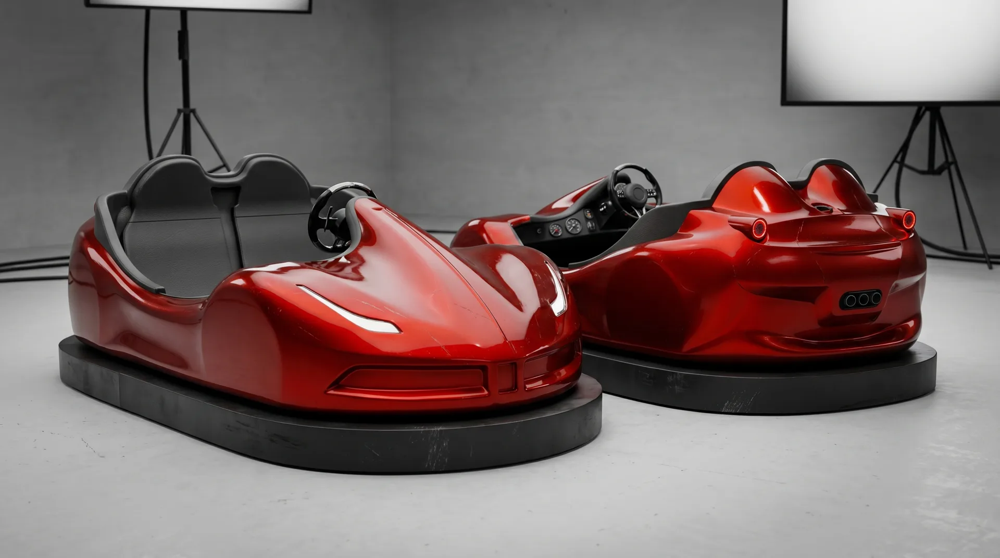
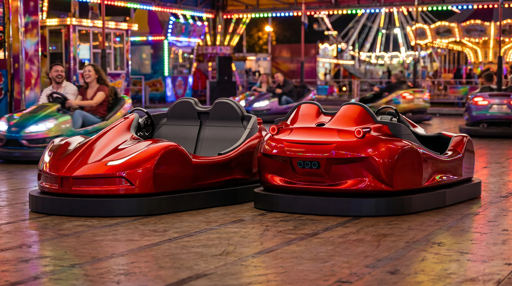
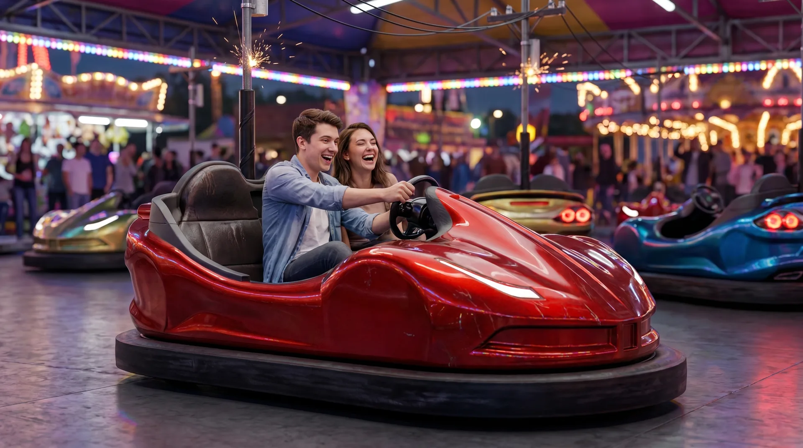
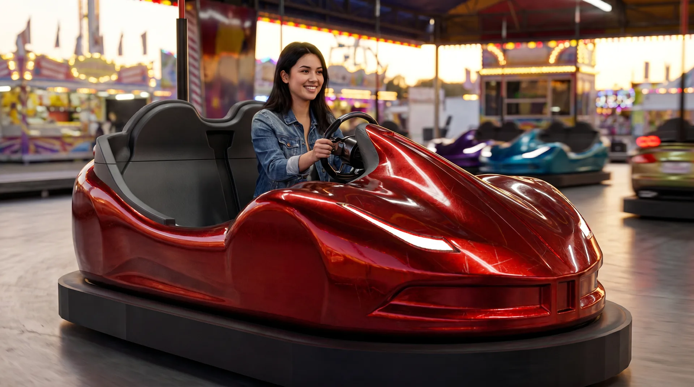

Eğlence Aracı
2025 · Sportif Konsept
Sportif Çarpışan Oto
Agresif Otomotiv Konsepti
Aşağı Kaydır
Agresif Çizgilere Sahip Modern Çarpışan Oto Tasarımı
Bu proje, klasik çarpışan oto formunu güncel otomotiv tasarım diliyle yeniden yorumlayan sportif ve agresif bir ürün tasarımıdır. Alçak gövde yapısı, keskin hatları, geniş omuz çizgileri ve parlak kırmızı yüzeyiyle araç; eğlence alanlarında güçlü, dikkat çekici ve dinamik bir görsel kimlik oluşturmak için tasarlanmıştır.
Form & Estetik — Tasarımda spor otomobillerden ilham alan aerodinamik yüzeyler, bütünleşik tampon formu ve modern LED aydınlatma detayları öne çıkarılmıştır. Ön bölümde agresif far çizgileri ve düşük burun yapısı kullanılırken, arka bölümde dairesel LED stop lambaları ve sportif difüzör etkisi veren detaylarla daha güçlü bir karakter elde edilmiştir.
Kullanıcı Deneyimi — Kullanıcı deneyimi açısından araç, ergonomik oturma pozisyonu, kolay yönlendirilebilir direksiyon yapısı ve geniş oturma alanı ile hem çocuklar hem de yetişkinler için konforlu bir sürüş hissi sunacak şekilde düşünülmüştür. Gövde formu sadece estetik değil, aynı zamanda darbelere karşı dayanıklı ve güvenli bir kullanım sağlayacak şekilde tasarlanmıştır.
Gövde & Şasi — Yüksek dayanımlı fiberglass veya ABS plastik gövde önerilmiştir; parlak otomotiv boyası ile premium ve dikkat çekici bir yüzey kalitesi hedeflenmiştir. Çelik konstrüksiyon şasi ile darbelere dayanıklı, uzun ömürlü ve güvenli bir altyapı kurgulanmıştır.
Tahrik & Tampon Sistemi — Elektrikli tahrik sistemi ile sessiz, düşük bakım maliyetli ve çevre dostu kullanım hedeflenmiştir; 24V veya 48V elektrikli motor altyapısına uygun olarak geliştirilebilir. Çevresel darbe emici kauçuk veya poliüretan tampon sistemi ile çarpışma etkisinin azaltılması amaçlanmıştır.
Aydınlatma & Güvenlik — Ön gündüz farları ve arka LED stop lambaları, tasarımın sportif karakterini güçlendirirken araç görünürlüğünü de artırır. Hız sınırlayıcı sistem, emniyet kemeri, darbe emici çevre tamponu ve acil durdurma sistemi tasarıma entegre edilebilir.
Kullanım Alanları — 1 yetişkin + 1 çocuk veya 2 çocuk kullanımına uygun ergonomik oturma alanı planlanabilir. Lunaparklar, AVM eğlence alanları, çocuk oyun merkezleri, etkinlik alanları ve tematik eğlence parkları için uygundur.
İki araç biri önden biri arkadan konumlanarak formun iki ucunu birlikte gösteriyor. İnce LED farlar ve dairesel stop lambaları sportif karakteri taşıyor.


Geniş oturma alanı iki kişiyi, direksiyon konumu tek sürücüyü rahat taşıyacak şekilde planlandı. Lunapark sahneleri bu ergonomiyi kullanımda gösteriyor.


Sürükle, döndür, yakınlaştır — modeli istediğin açıdan incele.
Alçak gövde, keskin hatlar ve geniş omuz çizgileri ile spor otomobil estetiği eğlence aracı kategorisine taşınır. Bütünleşik tampon formu ve aerodinamik yüzey geçişleri dikkat çekici bir görsel kimlik oluşturur.
Ön agresif far çizgileri ve arka dairesel LED stop lambaları, hem sportif karakteri pekiştirir hem de gece operasyonlarında parkur içinde görünürlüğü artırarak güvenliğe katkı sağlar.
24V veya 48V elektrikli motor altyapısına uygun sessiz, düşük bakım maliyetli ve çevre dostu tahrik sistemi. Hız sınırlayıcı ile çocuklar ve yetişkinler için güvenli sürüş garantisi.
Kauçuk veya poliüretan malzemeden çevresel tampon sistemi, çarpışma etkisini emerek hem aracı hem kullanıcıyı korur. Çelik konstrüksiyon şasi uzun ömürlü ve güvenli bir altyapı sağlar.